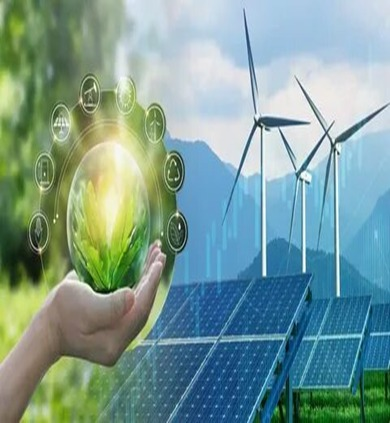
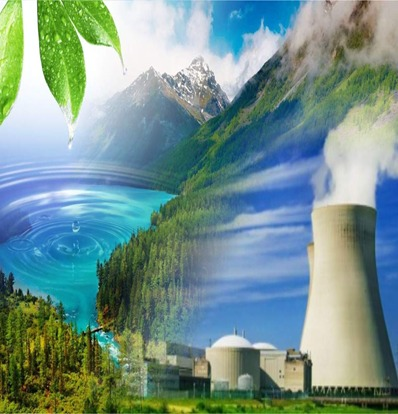
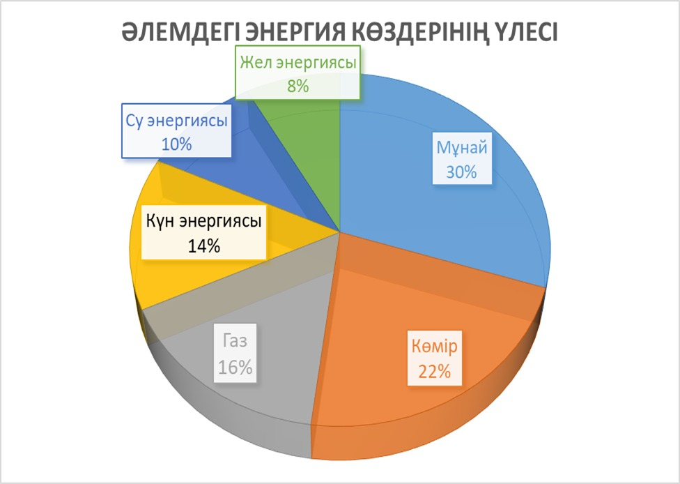

11-ТАПСЫРМА
Жаһандық энергетика мәселесі және экологиялық тұрақтылық
I. Теория
Мақсаты: Жаһандық энергетика мәселесі туралы мағлұмат беру, түсінік қалыптастыру. Мәтін құрылымын сақтай отырып, бірнеше графиктік мәтіндегі (диаграмма, кесте) деректерді салыстыру, маңызды тұстары мен үрдістерді (тенденция) анықтап жазады.
Міндеттері: Ұлттық құндылықтары мен нормаларын, сонымен бірге жалпыадамдық мәдени бағдарларды өзінде жинақтайды.
Бағалау критерийлері: Мәтіннің жанрлық ерекшеліктерін талдайды; Оқылым және тыңдалым материалдары бойынша негізгі ақпаратты іріктеп жазады.
Дәрістің қысқаша тезистері
Жаһандық энергетика мәселесі дегеніміз – адамзатты энергия және отынмен қамтамасыз ету. Бұл мәселенің туындауының негізгі себебі – ХХ ғасырда минералды отынды пайдаланудың өсуі. Дамыған елдер бұл мәселені энергияның жұмсалуына сұранысты кеміту арқылы шешсе, жаңа ірі индустриалды елдерде энергия жұмсалуы күн санап өсуде. Осы жайттар және кей аймақтардағы әскери-саяси тұрақсыздықтар энергоресурстардың әлемдік бағасының ауытқуына алып келеді. Сонымен қатар кризистік жағдайларды туғызып, ұсыныс пен сұраныстың динамикасына, энергетикалық тауарлардың өндірісі мен тұтынуына айтарлықтай әсер етеді.

Жаһандық энергетика және минералды отын ресурстары
Әлемдік экологияның әлеуеті адамзаттың шаруашылық қызметі себебінен жиі бұзылуда. Бұған жауап ретінде экологиялық тұрақты дамудың тұжырымдамалары даярланды. Олардың мәні – болашақ ұрпақтың мүддесін және қазіргі кездегі қажеттіліктерді ескеріп, әлемнің барлық елдерінде қоршаған ортаны сақтау.
Қоршаған ортаны қорғау – табиғат пен қоғамның өзара үйлесімді әрекетін қамтамасыз етуге бағытталған мемлекеттік және қоғамдық іс-шаралар жүйесі. ХХ ғасырдың 70-жылдарынан бастап ғалымдар қоршаған орта мәселесінің экономикалық даму үшін өте маңызды екенін түсінген. Себебі қоршаған ортаның деградациялық процесі жедел қарқынмен жүріп жатыр. Бұл – ресурстардың толықтай жойылып кетуіне алып келуі мүмкін.

Экологиялық тұрақты даму және табиғатты қорғау
Қорыта айтқанда, адамзат дамуының жаһандық мәселелері оның кез келген даму кезеңдерінде өзекті болды. Десек те, аталған мәселелер ХХІ ғасырда ерекше маңыздылыққа ие болып отыр.
(ҚазҰУ хабаршысынан)
ХХІ ғасырдағы энергетикалық өзгерістер
Бақылау сұрақтары:
- Жаһандық энергетика мәселесі дегеніміз не?
- Мәселенің туындау себебі неде?
- Дамыған елдер мәселені қалай шешуде?
- Қоршаған ортаны қорғау дегенді қалай түсінесің?
Тапсырманы орындау бойынша нұсқаулық (орындау тәртібі):
- Мәтінді түсініп оқиды, түсінгенін айтады;
- Сұрақтарға жауап береді.
Тапсырмадан күтілетін нәтиже: Берілген ақпаратты оқиды, сұрақтарға жауап береді.
Тапсыру формасы: Ауызша түрде.
Модуль / пән бойынша ұсынылатын әдебиеттер тізіміне сілтемелер: Okulyk.kz - Қазақ тілі (10-сынып)
II. Практика (СӨЖ № 11.2)
1-тапсырма. Мәтіннен маңызды ақпаратты іріктеу
Мәтін: Жаһандық энергетика мәселесі қазіргі уақытта адамзаттың алдында тұрған ең өзекті мәселелердің бірі болып табылады. Әлемде минералды отынның қоры азайып бара жатқандықтан, көптеген елдер энергияның баламалы көздерін іздеу қажеттілігіне тап болып отыр. Әсіресе, жаңартылатын энергия көздері – күн, жел, су энергиясы кеңінен қолданысқа енгізілуде. Сонымен қатар, экологиялық мәселелер, климаттың өзгеруі энергия өндіру мен тұтынудың тиімділігін арттыруды талап етеді.
Сұрақтар:
- Жаһандық энергетика мәселесінің негізгі себебі не?
- Қандай энергия көздері әлемде кеңінен қолданылуда?
- Энергия өндірісіне қандай экологиялық талаптар қойылуда?

Жаңартылатын энергия көздері: Күн және жел станциялары
2-тапсырма. Кесте мен диаграмманы талдау
Кесте: Әлемдік энергетика тұтыну бойынша деректер (2024 ж.)
| Елдер | Энергия тұтыну (млн т.ж.) | Жылдық өсім (%) |
|---|---|---|
| Қытай | 6 800 | +3.1% |
| АҚШ | 4 200 | +0.8% |
| Үндістан | 2 900 | +4.5% |
| Еуроодақ | 2 500 | - 1.2% |
| Ресей | 1 800 | +0.5% |
Диаграмма: Әлемдегі энергия көздерінің үлесі (2024 ж.)
- Мұнай: 30%
- Көмір: 22%
- Газ: 16%
- Күн энергиясы: 14%
- Су энергиясы: 10%
- Жел энергиясы: 8%
Сұрақтар:
- Қай елдерде энергия тұтыну көрсеткіші артып келеді? Бұл неге байланысты болуы мүмкін?
- Қай елде энергия тұтыну азаюда және оның себептері қандай болуы мүмкін?
- Әлемдегі энергия көздерінің қай түрі ең көп қолданылатыны көрініп тұр? Мұның экологиялық маңызы қандай?
- Диаграммадан қандай маңызды үрдістерді байқауға болады?
3-тапсырма. Экологиялық тұрақтылық пен энергия өндірісі
Мәтін: Әлемде энергия тұтыну көлемінің артуы экологияға кері әсерін тигізіп отыр. Көмір және мұнай сияқты қалдық қалдыратын отын көздерін қолдану ауаға зиянды газдардың шығуына себеп болады, бұл өз кезегінде климаттың өзгеруіне ықпал етеді. Сонымен қатар, бұл ресурстардың шектеулі болуы жаһандық энергетикалық дағдарысқа әкелуі мүмкін. Баламалы энергия көздері, мысалы, күн және жел энергиясы, экологияға зиянсыз және табиғатқа қосымша ауыртпалық түсірмейді.
Сұрақтар:
- Қалдық қалдыратын отын көздерін қолданудың экологиялық әсері қандай?
- Күн және жел энергиясы экология үшін неге тиімді?
- Энергия өндірісі мен экология арасындағы баланс қалай сақталуы керек?
Дәстүрлі отын мен жаңартылатын энергия көздерін салыстыру
4-тапсырма. Салыстыру кестесі
Тапсырма: Жаңартылатын энергия көздері (күн, жел, су) мен дәстүрлі энергия көздері (көмір, мұнай, газ) арасындағы артықшылықтар мен кемшіліктерді талдап, салыстыру кестесін құрыңыз.
| Энергия көздері | Артықшылықтары | Кемшіліктері |
|---|---|---|
| Күн энергиясы | Қоршаған ортаға зиянсыз, шексіз ресурстар | Жоғары бастапқы құны, тиімділігі ауа райына тәуелді |
| Жел энергиясы | Экологиялық таза, жаңартылатын | Құрылғылардың үлкен көлемі, кейде тұрақсыздық |
| Көмір | Құны төмен, қолжетімді | Ауаға зиянды заттардың шығуы, қоршаған ортаға әсері |
| Мұнай | Энергияның жоғары тығыздығы, қолжетімділігі | Қоршаған ортаға зиян, климаттың өзгеруіне ықпалы |
Тапсыру формасы: Жазбаша түрде.
Модуль / пән бойынша ұсынылатын әдебиеттер тізіміне сілтемелер: Okulyk.kz - Қазақ тілі (10-сынып)
III. Бағалау парағы
| № | Тапсырма | Дескрипторлар | Ұпай саны | Студенттің ұпай саны |
|---|---|---|---|---|
| 1 | Мәтіннен маңызды ақпаратты іріктеу |
• Мәтінді түсініп оқиды; • Мәтіннен негізгі ақпаратты іріктеп алады; • Сұрақтарға жауап береді |
5 балл 5 балл 5 балл |
|
| 2 | Кесте мен диаграмманы талдау |
• Төмендегі кесте мен диаграмманы талдайды; • Берілген сұрақтарға жауап береді |
10 балл 10 балл |
|
| 3 | Экологиялық тұрақтылық пен энергия өндірісі арасындағы байланысты талдау. |
• Мәтінді түсініп оқиды; • Экологиялық тұрақтылық пен энергия өндірісі арасындағы байланысты талдайды; • Сұрақтарға жауап береді |
10 балл 10 балл 5 балл |
|
| 4 | Жаңартылатын және дәстүрлі энергия көздерінің артықшылықтары мен кемшіліктерін салыстыру кестесін құру. |
• Энергия көздері арасындағы артықшылықтар мен кемшіліктерді талдайды; • Тақырып бойынша салыстыру кестесін құрады |
20 балл 20 балл |
|
| Барлығы: | 100 балл | / 100 | ||